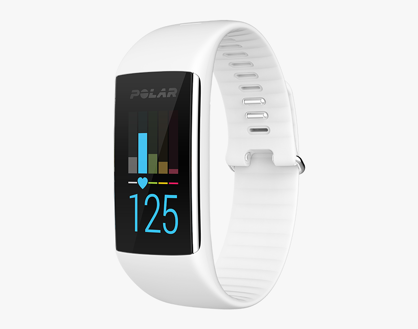
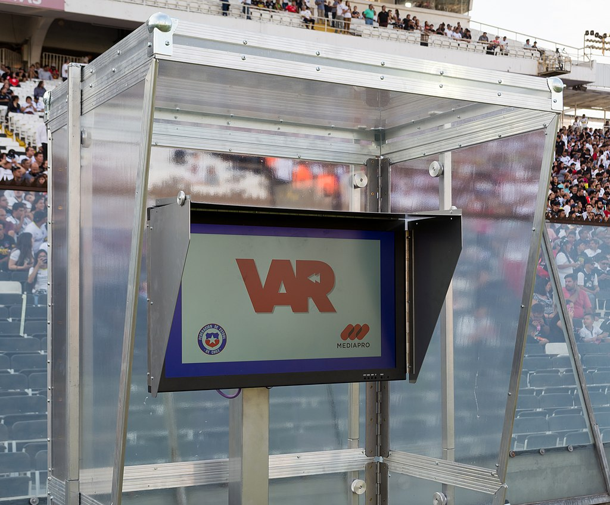
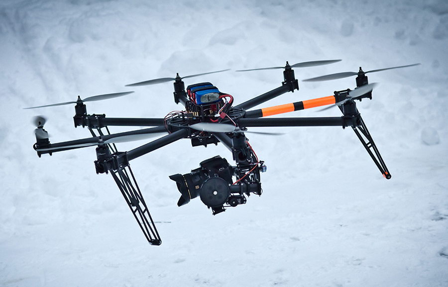

An example of a common smart watch can be seen above
Smartwatches are slowly becoming the norm for many fitness enthusiasts worldwide. They allow for quick access to vital health information which can drastically improve the user's experience. For decades, analogue and digital sports watches have been available; however, they have evolved into computer-based smartwatches that offer similar features along with apps that log the wearer's activities and offer personal health-related information. They allow the user to measure and monitor their performance, resulting in a better sports experience and achieving their fitness goals whatever those may be. Not all smartwatches are built especially with sport in mind however most smart watches come with built-in sports tracker capabilities.

VAR monitor at the Estadio Monumental David Arellano
Before this, goal-line technology was introduced in football, which helped determine if the ball crossed the goal line or not. It was only used when the referee couldnt rule a goal and to take a third opinion. The video assistant referee or VAR for short is a system in which an assistant referee reviews match footage using specialised equipment recorded by cameras, drones and other camera devices. The inclusion of the latest computer and digital camera technology allows the assistant referee to look over match footage with much more detail, more than would ever be possible when only using the very limited view of the official referee that's on the field.

An unmanned aerial vehicle carrying a video camera
Before this, goal-line technology was introduced in football, which helped determine if the ball crossed the goal line or not. It was only used when the referee couldnt rule a goal and to take a third opinion. The video assistant referee or VAR for short is a system in which an assistant referee reviews match footage using specialised equipment recorded by cameras, drones and other camera devices. The inclusion of the latest computer and digital camera technology allows the assistant referee to look over match footage with much more detail, more than would ever be possible when only using the very limited view of the official referee that's on the field.